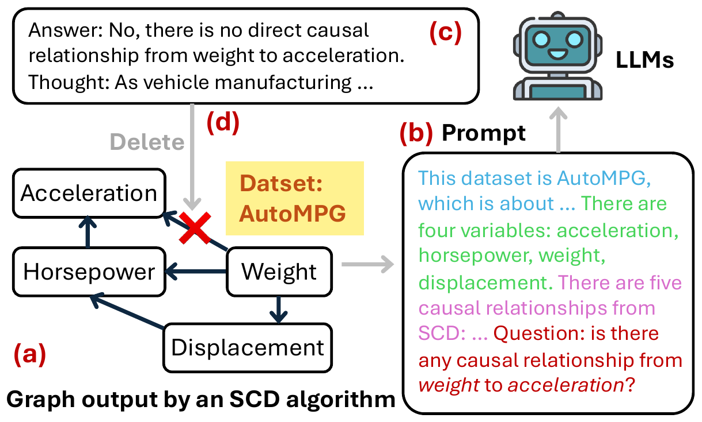
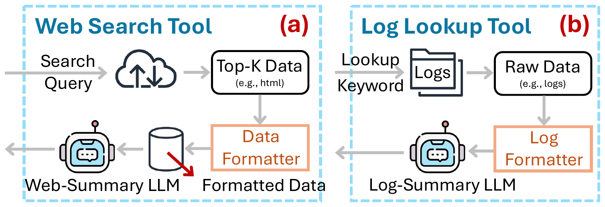
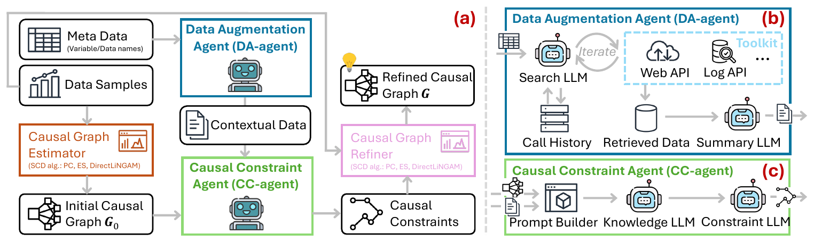
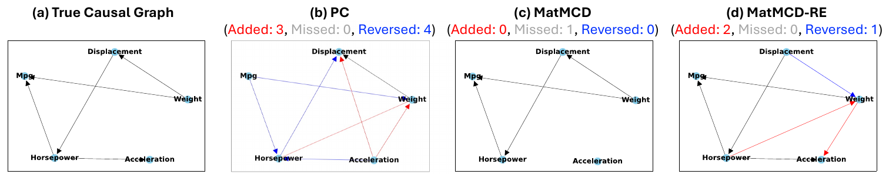
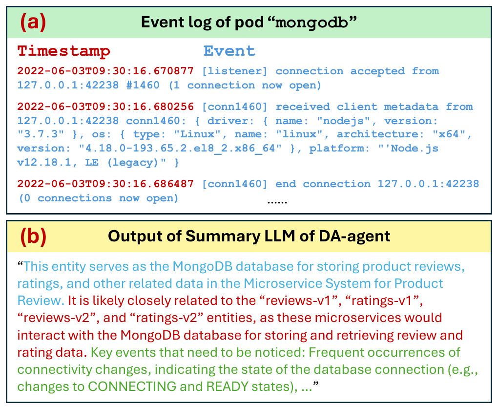

Exploring Multi-Modal Data with Tool-Augmented LLM Agents
for Precise Causal Discovery
ChengAo Shen1, Zhengzhang Chen2, Dongsheng Luo3, Dongkuan Xu4, Haifeng Chen2, Jingchao Ni1
1University of Houston 2NEC Laboratories America 3Florida International University 4North Carolina State University

Causal discovery is an imperative foundation for decision-making across domains, such as smart health, AI for drug discovery and AIOps. Traditional statistical causal discovery methods, while well-established, predominantly rely on observational data and often overlook the semantic cues inherent in cause-and-effect relationships. The advent of Large Language Models has ushered in an affordable way of leveraging the semantic cues for knowledge-driven causal discovery, but the development of LLMs for causal discovery lags behind other areas, particularly in the exploration of multi-modal data.
To bridge the gap, we introduce MATMCD, a multi-agent system powered by tool-augmented LLMs. MATMCD has two key agents: a Data Augmentation agent that retrieves and processes modality-augmented data, and a Causal Constraint agent that integrates multi-modal data for knowledge-driven reasoning. The proposed design of the inner-workings ensures successful cooperation of the agents. Our empirical study across seven datasets suggests the significant potential of multi-modality enhanced causal discovery.
Hybrid methods for causal discovery typically prompt LLMs with the prior causal graph produced by some SCD algorithm, appended by some meta-data such as variable names and dataset titles as contexts. However, these inputs may fall short in fully activating the reasoning ability of LLMs. We were inspired by the observation that abundant semantic data from external sources, such as webs and logs, can serve as an additional modality to the observational data for improving prompts. On a variety of datasets, MATMCD reduces causal discovery errors (NHD) by up to 66.7% and improves root cause locating (MAP@10) by up to 83.3% over the best baselines.

Causal Graph Estimator It serves as an initializer of causal graph and is built upon data-driven SCD algorithms, with the aim of estimating an initial causal graph purely from the observational data without accessing any other information. Our framework is flexible to the choice of SCD algorithms. In this work, we investigate the feasibility of employing three widely used algorithms, each of which is a representative of a category: the constraint-based Peter-Clark (PC) algorithm, which is non-parametric; the score-based Exact Search (ES) algorithm, which is non-parametric; and the constrained functional causal model DirectLiNGAM, which is semi-parametric.
DA-agent The goal of the Data Augmentation agent is to retrieve semantics-rich contextual data pertinent to the initial causal graph, such as web documents and log files about the variables, as an additional modality to observational data. Upon receiving the meta-data about the causal graph, the Search LLM first checks its calling history memory to decide whether to initiate a new tool call. If a new call is needed, the Search LLM invokes a search tool API to retrieve additional data using a prompt that includes the dataset title and the variable names, and this search action is recorded in the memory for future reference. In subsequent iterations, all previously recorded queries are examined to prevent redundant queries. The loop terminates when the LLM concludes with a “No query needed” response.
Tool preparation In the web search tool we employ Google search API where the query is generated by the Search LLM. The retrieved top webpages will be de-formatted, for example by removing HTML tags, by a data formatter, and the resultant plain docs will be stored in a memory; then a Web-Summary LLM is employed to summarize the docs into a concise description. In contrast, the Log Lookup tool uses exact lookup, that is, with a variable name as the keyword, its corresponding log can be retrieved directly. Thus the memory can be removed, and the retrieved log, which still needs de-formatting such as removing log templates and could be lengthy, will be summarized by a Log-Summary LLM.
Summary LLM The data retrieved by the Search LLM is iteratively added to the Retrieved
Data Memory. Upon loop termination, a Summary LLM summarizes the retrieved data into three
types of cues: a description of the dataset; a description of each variable in the graph; and
relationships between the variables. Since the size of the retrieved data from iterative
searches may exceed the LLM's context window, we adopt an efficient summarization approach
using RAG, implemented with LlamaIndex using text-embedding-ada-002 for chunk
indexing and Maximum Inner Product Search for retrieving relevant chunks.
CC-agent In addition to the external knowledge, our method leverages the factual knowledge stored in LLMs, acquired during pre-training. The Causal Constraint agent is designed based on the Two-Stage Prompting framework of zero-shot Chain-of-Thought. First, a prompt builder integrates the initial causal graph, represented as an adjacency list, with contextual data from DA-agent to prompt a Knowledge LLM, which is tasked with explaining each existing and non-existing causal relationship in the initial causal graph based on the contextual data and its own knowledge. These explanations, which could either support or refute the causal relationships, are used to prompt a Constraint LLM in the second stage to draw a conclusion on the existence of each relationship. To address potential uncertainty in the conclusions, we adopt the Top-K-Guess technique to elicit verbal confidence; among the Top-K guesses, the most confident one is selected as the final conclusion.
Causal Graph Refiner To ensure the final causal graph is acyclic, the edge set is not directly modified based on the existence and non-existence constraints from CC-agent. Instead, the SCD algorithm used in the Causal Graph Estimator is rerun with these constraints imposed to generate a new causal graph. A constraint matrix is constructed in which an entry is 1 if CC-agent indicates a causal effect from one variable to another, and 0 otherwise. The most representative SCD algorithms, including PC, ES and DirectLiNGAM, are designed to incorporate such a constraint matrix as input alongside observational data, which ensures that the generated causal graph complies with the constraints and is a directed acyclic graph.

To be comprehensive, we use five benchmark datasets covering both continuous variables and discrete variables: AutoMPG, which has five variables concerning city-cycle fuel consumption in miles per gallon; DWDClimate, which has six variables pertinent to observations from weather stations in Deutscher Wetterdienst; SachsProtein, which has eleven variables measuring the expression level of different proteins and phospholipids in human cells; Asia, which has eight variables relevant to lung disease diagnosis; and Child, which has twenty variables regarding congenital heart disease in newborn babies. By default we use GPT-4o mini with temperature 0.5 as the base LLM for all LLM-based and hybrid methods, and PC is used as the base SCD algorithm for all hybrid approaches.
Several observations follow from the table below. Methods involving LLMs generally outperform SCD algorithms in most cases except for the SachsProtein and Asia datasets, which pertain to biomedicine; this demonstrates the great potential of LLMs' commonsense knowledge acquired by pre-training for the task of causal discovery, but meanwhile draws our attention to their shortage of domain-specific knowledge. Hybrid approaches outperform LLM-based baselines in most cases, indicating that using SCD outputs as a prior for LLMs to reference has the benefits of complementing their causal effects related knowledge. Baseline methods that can leverage tools for retrieving external data, i.e. ReAct and LLM-KBCI-RA, sometimes outperform their counterparts, suggesting the potential of the augmented knowledge, but calling for a better way of retrieving and using external data.
The proposed MATMCD and MATMCD-RE achieved the best overall performance, considering that no baseline method consistently performs well across all datasets. In particular, they help alleviate the hallucination problem of other LLM baselines on the biomedical SachsProtein and Asia datasets via data augmentation. The results highlight the challenge of the existing LLM baselines in inferring causal effects solely by meta-data, i.e. node names and data titles, and validate the effectiveness of the proposed design of a multi-agent system for exploring multi-modality enhanced causal discovery. Finally, MATMCD-RE outperforms MATMCD on the Bayesian datasets Asia and Child, which could be a result of the better calibrated likelihoods by Top-K Guess reasoning for the probabilistic datasets.
Prc and F1 measure the accuracy, thus a larger value is better; FPR, SHD and NHD measure the errors or differences, hence a smaller value is better. The best value in each column is marked in the accent colour and the second best is underlined. Numbers marked with an asterisk are adopted from the paper of the method, which are only available on the datasets with continuous variables.
We also investigate how MATMCD(-RE) refines the causal graphs generated by SCD algorithms by visualizing the true causal graph of the AutoMPG dataset, along with the causal graphs produced by PC, MATMCD and MATMCD-RE. Compared to PC, MATMCD(-RE) yields graphs that resemble the true causality better, with less wrongly added, missed, and reversed edges, suggesting the advantage of leveraging LLM agents' ability to impose multi-modal data empowered knowledge-driven constraints for screening erroneous edges. In contrast, PC alone relies solely on observational data thus is more error-prone. Moreover, LLM-provided knowledge offers precise guidance in establishing causal directions, resulting in fewer reversed edges on most of the datasets.

The ablation analysis uses three datasets, with MATMCD as our original model. We study the usefulness of the iterative search in DA-agent by replacing it with a single-round search template; we assess the effectiveness of the Knowledge LLM in CC-agent by removing it from CC-agent, which is equivalent to merging the Knowledge LLM and the Constraint LLM into a single LLM; we evaluate how MATMCD could generalize to different SCD algorithms by switching PC with ES and DirectLiNGAM; and we assess the impact of different LLMs on causal discovery.
We observe that iterative search is better than single-round search, as the latter may use biased query and have difficulty in producing comprehensive augmented data. Including a separate Knowledge LLM for explaining causal relationships is better than merging it with the Constraint LLM, suggesting their distinct roles in CC-agent. Using other SCD algorithms than PC generally degrades the performance, possibly because the constraint-based design of PC leads to better use of the constraints produced by LLMs; we also observe that, with MATMCD, the performance of ES and DirectLiNGAM were slightly enhanced compared to the counterparts without MATMCD. Intriguingly, the default GPT-4o mini is the most robust across different datasets, and GPT-4 is better than the open source LLMs. Compared to PC, all LLM variants improve performance, suggesting the effectiveness in leveraging the LLMs. Moreover, on the biological dataset SachsProtein, a larger model GPT-4 further boost the causal discovery performance, likely due to its better alignment with the specific domain.
Ablation analysis of the proposed MATMCD method on benchmark datasets. Prc and F1 measure the accuracy, thus a larger value is better; FPR, SHD and NHD measure the errors/differences, hence a smaller value is better.
Next, we evaluate MATMCD on AIOps datasets collected from Product Review (PR) and Cloud Computing (CC) microservice systems. The PR dataset has 216 variables, i.e. system pods, each associated with a multivariate time series containing 6 metrics, such as CPU and memory usage, of length 131,329. The CC dataset has 168 variables, each with a multivariate time series of 7 metrics and a length of 109,351. In both datasets, each variable also has a log recording its historical events. Through the log lookup tool, these logs can be leveraged as an additional data modality by MATMCD for enhanced causal discovery. The figure below demonstrates that the Summary LLM of DA-agent can effectively interpret and summarize the log data.
Since these datasets provide root causes of system failures identified by domain experts, but lack ground truth causal graphs, we use them to evaluate the root cause analysis performance based on the causal graphs produced by different methods. If running a random walk with restart on a causal graph can top-rank the root cause among all variables, it reflects the quality of the causal graph; therefore we use the widely adopted Mean Average Precision@K, with K set to 5 and 10, and Mean Reciprocal Rank, to assess the overall ranking performance on both datasets. By leveraging the log modality, MATMCD(-RE) significantly improves the accuracy of root cause locating on both datasets, with an 83.3% relative improvement over the best baseline on MAP@10. This highlights the potential of integrating prevalent log data in microservice systems for RCA and AIOps.
Larger MAP@5, MAP@10 and MRR are better. RK (P) and RK (C) are the ranks of the root causes in the Product Review dataset and the Cloud Computing dataset respectively, predicted by different methods, and smaller is better. Exact Search and DirectLiNGAM are excluded as the focus is how different LLM-based methods can improve their base SCD algorithm, i.e. PC, for the downstream task.

@inproceedings{shen-etal-2025-exploring,
title = {Exploring Multi-Modal Data with Tool-Augmented {LLM} Agents for Precise Causal Discovery},
author = {Shen, ChengAo and Chen, Zhengzhang and Luo, Dongsheng and Xu, Dongkuan and Chen, Haifeng and Ni, Jingchao},
booktitle = {Findings of the Association for Computational Linguistics: ACL 2025},
address = {Vienna, Austria},
publisher = {Association for Computational Linguistics},
pages = {636--660},
year = {2025}
}